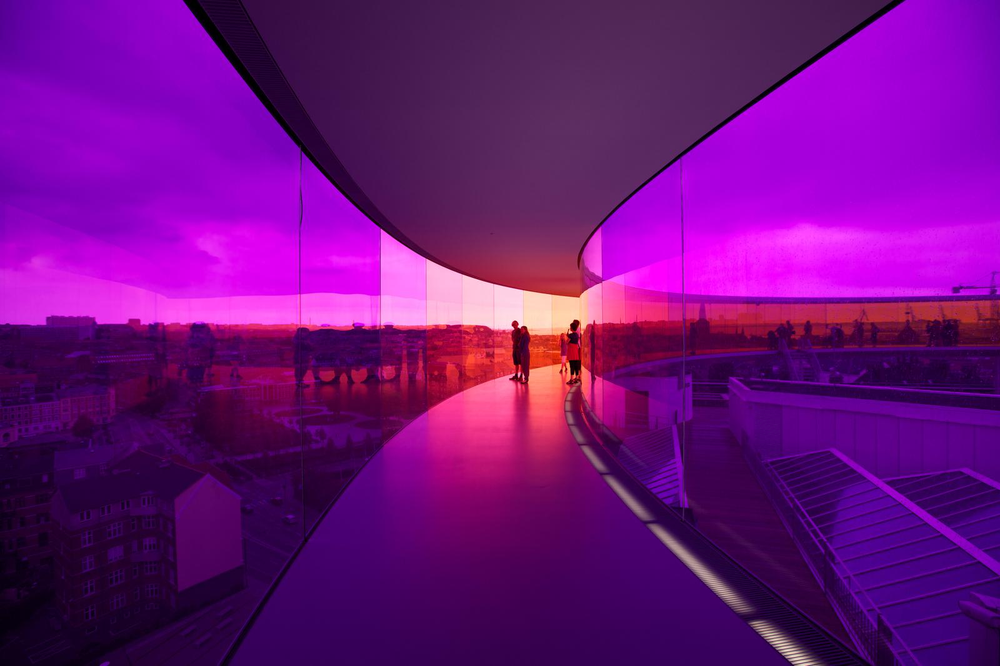
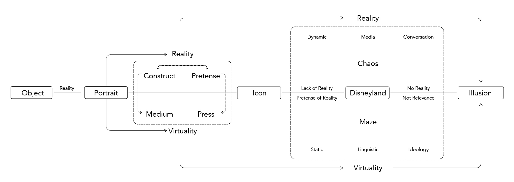

3D Experience Research and Hyperreality Interaction Design
Project Type: 3D experience design, Mixed reality
Roles: Designer & modeler
Team: Individual work
Timeline: Spring 2016
This project aims to explore interactive 3D experience and experiments with the idea of hyperreality to build a prototype for museum experience of the future.
What Constitutes Hyperreality Experiences
Different exhibits require different spaces. Increasing needs for rotating exhibitions ask for flexible 3D space.
Visitors may visit the same museum for different exhibitions. But they also want unique experiences everytime.
Cutting-edge technologies like AR (Augmented Reality), VR ( Virtual Reality), and MR ( Mixed Reality) are changing our way of seeing and interacting with the real world. In addition, visual and aural effects can greatly influence our interpretation of what we see.
Digital media is a great way to achieve the interaction between human and machines by sensors and trackers.
VR frees visitors from locality constrains and AR/MR enables customization for unique experience at the same locations.
Color is a psychological property of our visual experiences through the interaction with objects and lights.
So how to create hyperreality? The key is to create the ambiguity between virtual and reality. That is, the virtualility is built upon reality and the reality is overlapping with virtuality. Therefore, I choose to study reflection, distortion, recursion, and contrast to see how to create the 'in-between' state.
Different positions to the mirrors create distorted reality.
The space is inside its parent but never reach an end.
What's in front of us seems to be accessible but only our illusion.
How could these experiments be applied to 3D space? I simulated the interaction between objects and space in grasshopper and tried to apply the effects in a complex math geometry model called danzer tiling.
Reflection could drastically change our perception of the world by different combination of mirrors.
Lighting and sounds are important medium for ambiguity between virtuality and reality.
Combination and grouping of spatial blocks.
Finally, I chose the model of danzer tiling to synthesize the three simulations.
Rendering of 3D Space - Projections, Reflections, and Simulations
In the same space, different exhibits and visitors will have unique experiences because of the unique interactions they make with the building.
Interactions in 3D
Circulations
Section Analysis